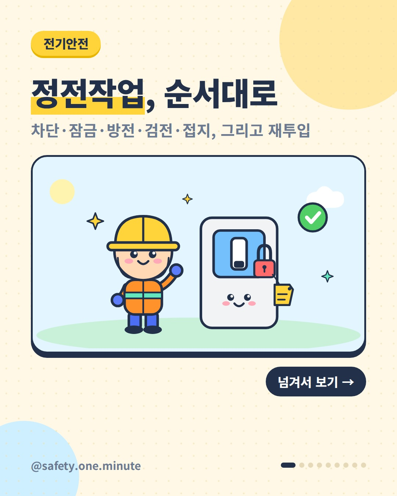
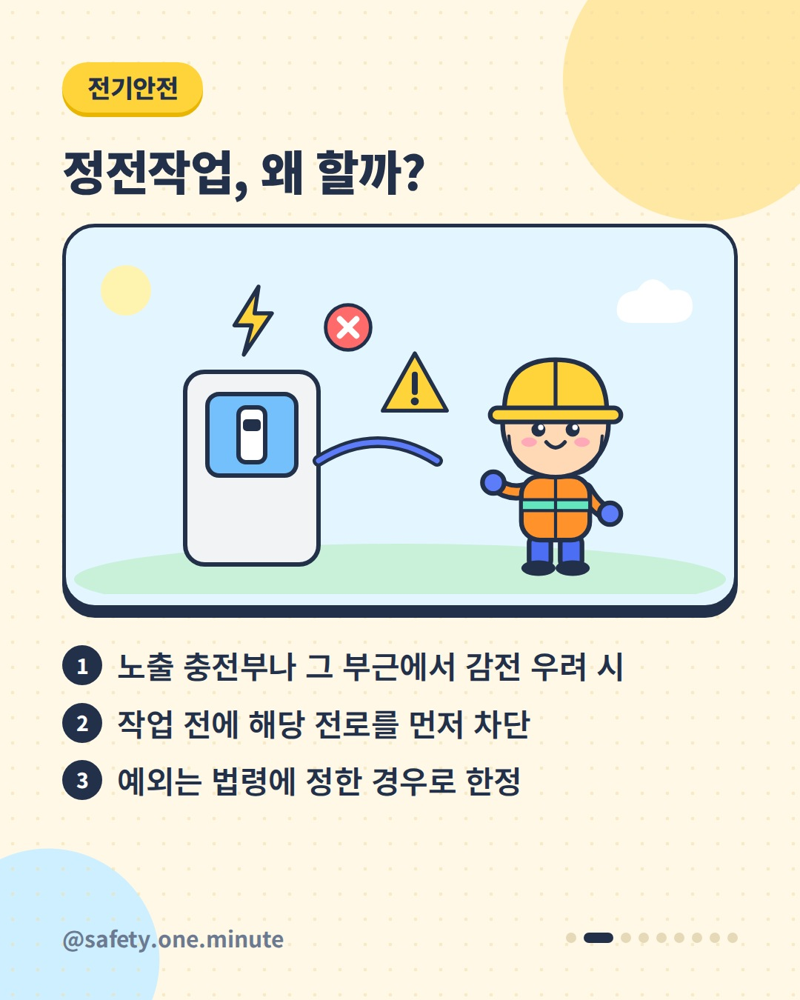
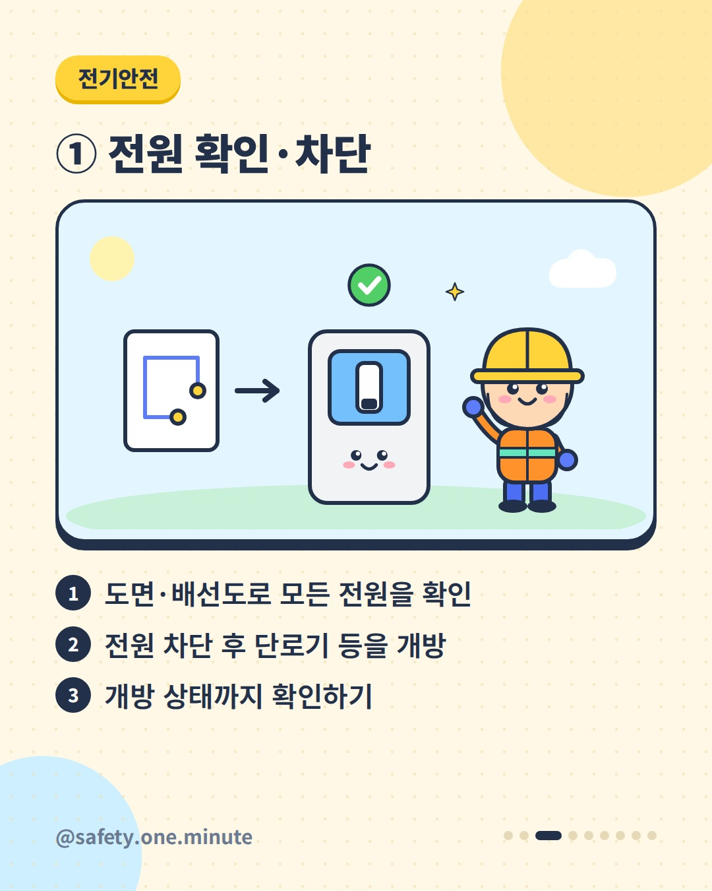
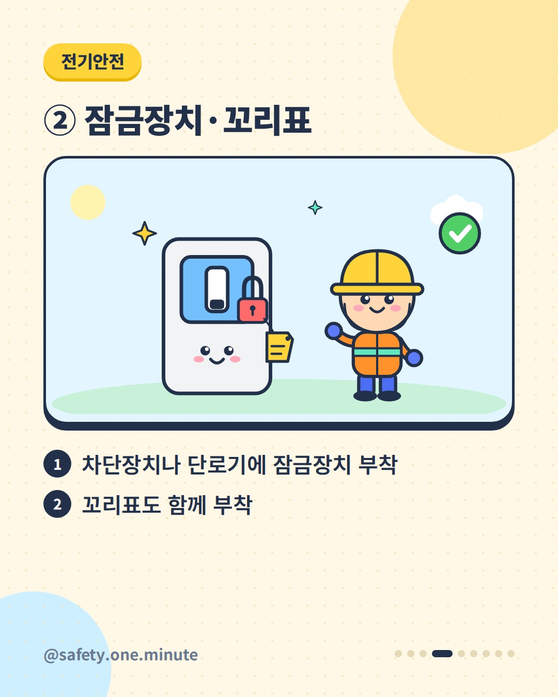
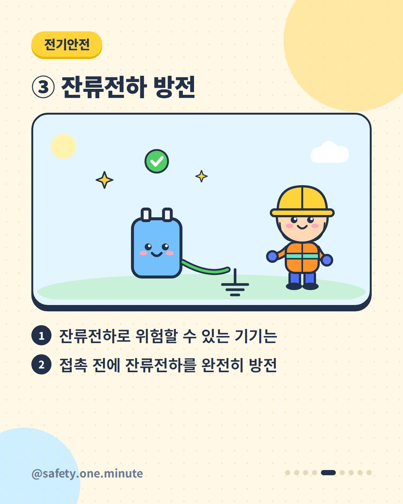
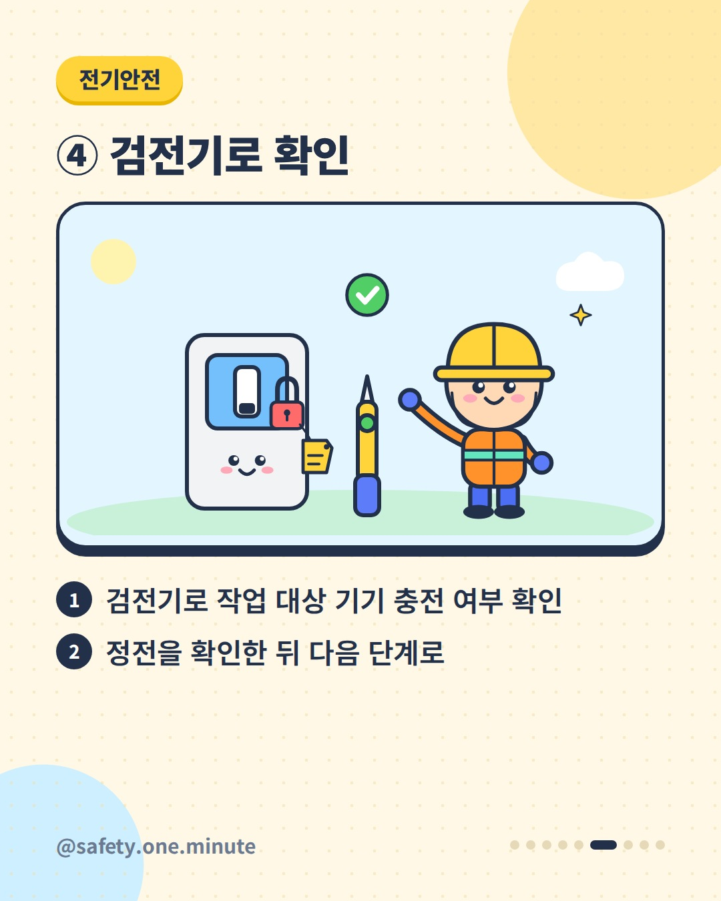
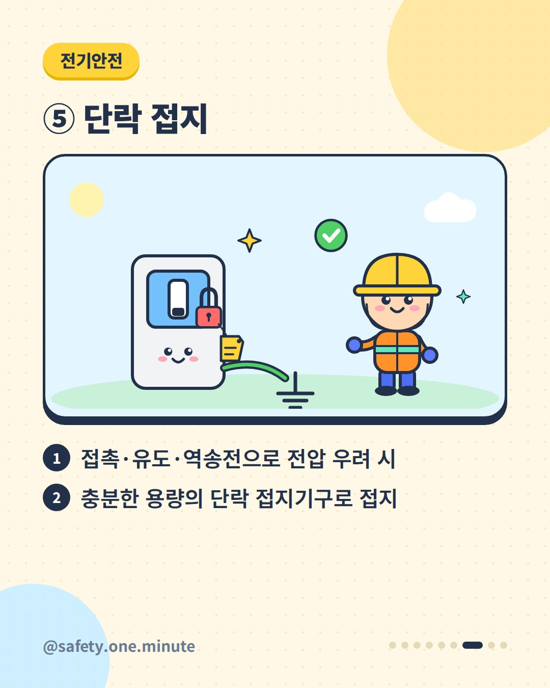
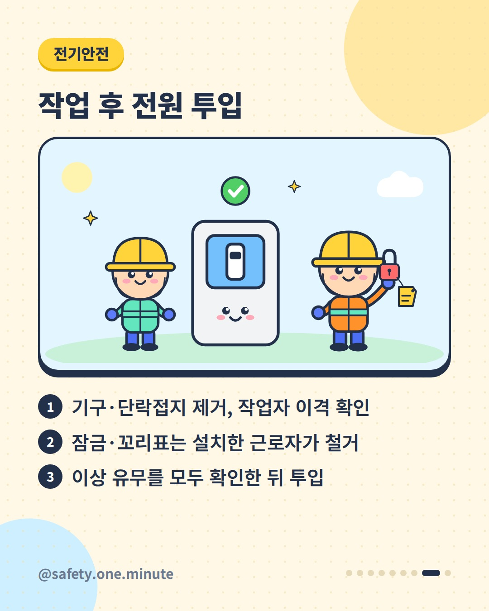
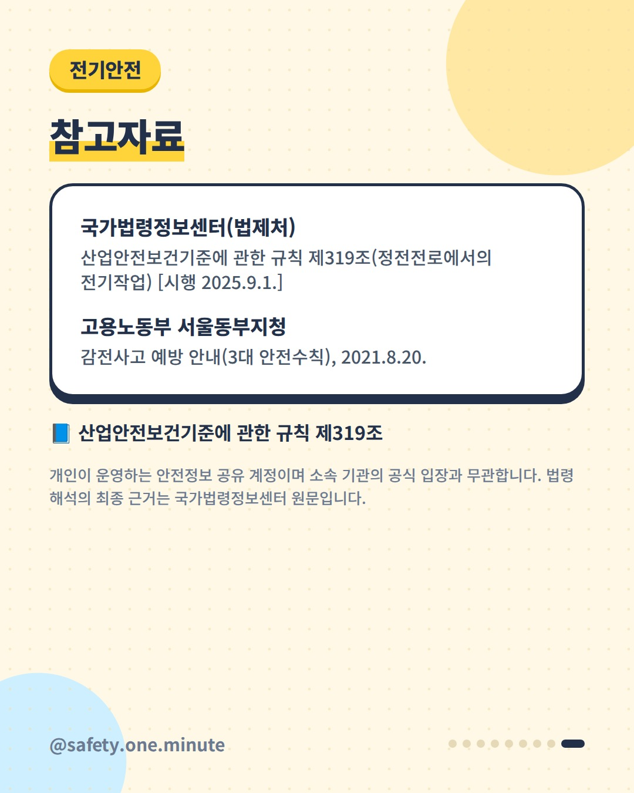

정전작업, 순서대로 — 9장 (4:5)









캡션
전기설비를 고치기 전, '전원만 내리면 끝'일까요? 산업안전보건기준에 관한 규칙 제319조는 노출된 충전부나 그 부근에서 작업하다 감전될 우려가 있으면 작업 전에 해당 전로를 차단하도록 정하고, 차단 순서도 구체적으로 규정합니다. ① 도면·배선도로 모든 전원을 확인하고, 전원을 차단한 뒤 단로기 등을 개방·확인 ② 차단장치나 단로기에 잠금장치와 꼬리표 부착 ③ 잔류전하로 위험할 수 있는 기기는 접촉 전 완전히 방전 ④ 검전기로 작업 대상 기기의 충전 여부 확인 ⑤ 접촉·유도·역송전 등으로 전압이 생길 우려가 있으면 단락 접지기구로 접지 작업을 마치고 전원을 넣을 때도 순서가 있습니다. 작업기구와 단락 접지기구를 치우고, 모든 작업자가 기기에서 떨어졌는지 확인한 뒤, 잠금장치와 꼬리표는 설치한 근로자가 직접 떼고, 이상 유무를 확인한 다음 투입합니다. 고용노동부 서울동부지청도 감전 예방 3대 안전수칙으로 '절연조치 및 보호구 착용, 작업 전 전기차단, 접지 및 누전차단'을 안내했습니다(2021.8.). ※ 차단 의무의 예외(생명유지장치 등)와 세부 요건은 법령 원문(2025.9.1. 시행본 기준)을 확인하세요. 출처: - 국가법령정보센터(법제처) – 산업안전보건기준에 관한 규칙 제319조 - 고용노동부 서울동부지청 – 감전사고 예방 안내(2021) 개인이 운영하는 안전정보 공유 계정이며 소속 기관의 공식 입장과 무관합니다. 법령 해석의 최종 근거는 국가법령정보센터 원문입니다. #정전작업 #전기안전 #감전예방 #LOTO #잠금장치 #꼬리표 #검전기 #단락접지 #산업안전보건기준에관한규칙 #산업안전 #안전수칙 #전기작업 #현장안전 #안전보건